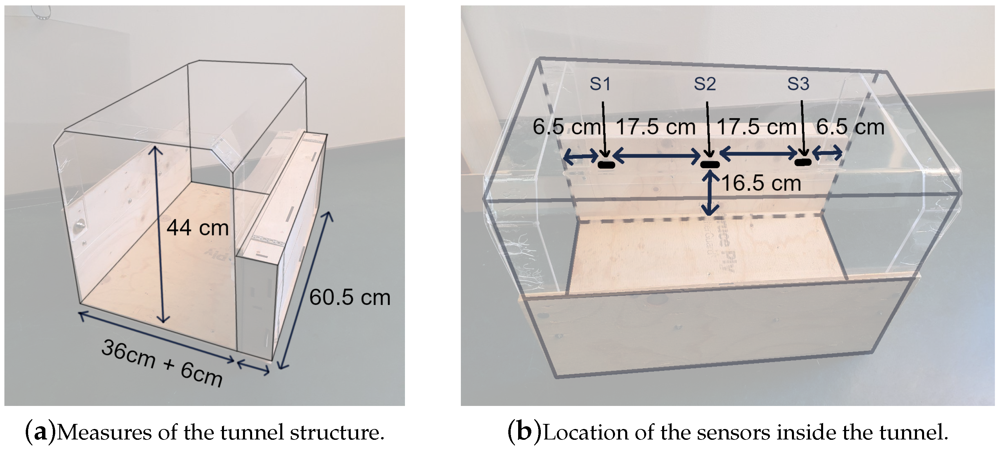

Roosa Piitulainen
User Research Portfolio
This page presents selected highlights - check out my full research output here.
Empirical player study
Part of my Ph.D. dissertationAs a part of my dissertation, I investigated player experiences related to the moment-to-moment feel of gameplay (i.e. game feel). How game feel affects player experience outcomes has been studied in terms of overall player experience outcomes (such as autonomy or competence), though with mixed results.
Problem
The subjective player experience of game feel and how to capture these experiences has received little attention, even though the coherence and congruency of experiences have been theorised to be crucial for "good" or successful game feel. Further, how to create good game feel is not trivial but is considered an important design challenge. Thus, understanding and being better able to capture subjective player experiences of game feel could support both future research and design goals.
Approach
In earlier literature game feel has been theorised to be "invisible" to players or otherwise difficult to articulate, making it hard to capture subjective descriptions of the feel. To address this problem, across two studies I compiled a vocabulary of game feel terms to describe different subjective qualities associated with game feel, e.g. clunky, smooth, fluid, etc. The intention here was to develop a standard vocabulary to describe game feel, which could both help players convey their experience in studies and playtesting, as well as serve as a design resource to articulate and specify desired game feel experiences. For further research, being able to capture subjective qualities of the experience could help link them to specific aspects of game implementation on one hand, as well as to overall player experience outcomes on the other.
Methodology
In two studies, we used the two iterations of this vocabulary to capture subjective qualities of experienced game feel. This first study was a player study, where participants played a custom game in two different game feel conditions: "good" and "bad" character control feel, where the good condition has responsive controls and the bad condition introduced a delay to translating user inputs to character movement. In each condition the particpants indicated all the terms that described their experience. I then analysed this data using multiple correspondence analysis and clustering analysis to identify dimensions and clusters of game feel experience. A standard player experience questionnaire and comparison of the selected terms were used to compare the overall differences between the two conditions.
Findings
The two feel conditions were overall rated differently: the controls in the good condition were considered "responsive" and "precise", whereas the bad condition was more often described as "slow", "heavy", and "sluggish". Still, enjoyment was reasonably high in both conditions, and when participating, many people said they enjoyed the experiment.
In the dimensions and groups of player experience based on the game feel terms, there was still substantial variety that was not only linked to the two conditions. Certain clusters of experiences occured in both conditions, meaning that some experiences in the good condition resembled other experiences in the bad condition when looking at the subjective qualities. That is to say, this approach allowed us to identify player experience clusters and understand the variability in the experiences more granularly than what just comparing the two conditions would allow.
Survey study
Part of my Ph.D. dissertationIn a pilot phase of the second study, the game feel vocabulary was used in an online survey, where we wanted to compare experiences of two distinct facets of game feel: the aesthetic sensation of control and the experience of simulated physicality.
Problem
These distinguishable experiential facets of game feel have been theorised in prior literature, but if and how they might be reflected in user experiences has not been studied before. To clarify this question, I wanted to try eliciting descriptions of the two different facets to investigate if players are able to articulate their experiences to this level or granularity, and how these experiences differ in their central important characteristics.
Approach and Findings
Thus, we focused on recalled memorable experiences of game feel related to one of these facets. The participants' open-ended descriptions of their experiences indicated that they successfully recalled and focused on a specific facet of game feel, and were able to articulate aspects of their experience related to it. Meanwhile, a network analysis of the game feel term responses provided a view to how the experiential qualities were grouped and related to each other. This approach thus provides a way to capture experiential aspects of game feel and to analyse their central qualities and how they relate to each other.
Interview study | Research Article
Vibing Together: Dance Experiences in Social Virtual RealityProblem
This study was a part of a larger EU project that was focused on concerns related to designing social VR dancing experiences. At the beginning of the project in 2021 I came across the VRChat dancing scene, which was clearly an existing and thriving community around social dancing in VR. In this light, I proposed a study to investigate what about VR dancing was important for the people in this community, and what might be aspects that could be improved upon.
Approach and Findings
To address this question, I interviewed people who regularly danced in VRChat, and through thematic analysis identified core experiential aspects as well as unfulfilled needs that could be addressed in the future. It was clear dancing in social VR fulfilled various social needs and facilitated self-expression and exploration, while providing social, safety, and accessibility benefits when compared to going to a club in the real world. However, there remained various technical challenges related to the available commercial VR technology, as well as latency and networking issues. Furthermore, some of the platform policies and tools provided to the creators of content on VRChat limited the participants' ability to protect themselves from harrasment and malicious actors. These results highlight some of the key requirements for a social dancing platforms, aspects to focus on to facilitate meaningful experiences, as well as point out issues in need of further development.
Design & Evaluation | Research Articles
Developing Zoo Technology Requirements for White-Faced Saki MonkeysMusic for Monkeys: Building Methods to Design with White-Faced Sakis for Animal-Driven Audio Enrichment Devices
This project focused on designing and evaluating interactive enrichment for white-faced sakis, a small species of primates, living at the Korkeasaari Zoo in Helsinki, Finland.
Approach
We took an animal-centered design approach, where the animal users' autonomy and consent to using the system. In addition to these principles, the zoo staff and visitors were included as stakeholders. I informally interviewed the keepers in charge of the sakis' care, as well as the zoo's research coordinator, and the curator of the tropical house. All zoo keepers working with the sakis also filled out a survey to collect further details on what might be desirable for interactive enrichment for the animals. The interviews and survey were done to identify any practical requirements related to the space and everyday life of the sakis and to learn about the welfare needs and preferences of the sakis.
The same survey that was distributed to the zoo keepers was also handed out to visitors of the zoo, to identify any requirements the visitors might have and to survey their attitudes towards interactive enrichment more generally. Some of the requirements identified from this data aligned with the keeper requirements, such as supporting health and enrichment, and having no negative effects. However, the visitors had additional wishes, including learning something about the animal through the technology or it enabling human-animal interaction. As the focus of this project was to provide enrichment for the animals and the scope was limited, it was not possible to address these additional requirements specific to zoo visitors.
Design
Based on the collected requirements, we desided to pursue audio enrichment that could be triggered by the sakis themselves. The animals were already receiving food-based enrichment, and a varied soundscape was identified as something not currently present in their environment. The audio should be delivered in a way that would allow the sakis to intentionally listen to it in a comfortable place. Thus, I explored different ways of providing directed or contained audio. One challenge here was that according to the keepers, the sakis did not enjoy confined spaces. Given this, the two prototypes that were explored were a conical plastic "umbrella" that would project sound downward, as well as a open-ended tunnel made out of plywood and plastic to have a non-slippery surface but a mostly transparent structure.
These two prototypes were placed in the sakis' enclosure for 16 days to observe how they reacted to them. A substantial test period was chosen to mitigate for novelty effects, which are common when introducing new objects to animals. After the first day and intial curiosity towards both objects, the cone prototype was largely ignored, while the tunnel became a regular daily location for the sakis. Thus, the tunnel was selected as the final form. Infrared proximity sensors were installed inside the tunnel to activate the audio whenever an animal would enter the structure, and the electronics including a small speaker were encased in a plywood casing along the side of the structure. The proximity sensor to activate audio was chosen due to the sakis' reported tendency towards non-precise touch interactions and the requirement that the system should not require specific training to use. This way, the animals could enter and listen to the audio if wished and simply avoid the stucture if they did not appreciate the sounds.
Evaluation and Findings
Four different audio tracks were used with the system, each for one week at a time. These were rain sounds; soft and melodic ambient electronic music; traffic sounds; and rhythmic electronic music. These were chosen to represent a variety of different frequency and rhythm spectrums, as it was not know what type sounds primates like the sakis might prefer. The sakis' usage of the system (daily frequency and length of interactions) was evaluated for each audio, comparing the conditions to each other and the baseline of silence.
Surprisingly, only the traffic audio condition showed statistically different interaction times compared to the silent prototype, being the most "popular" out of all the sounds and also more used than the tunnel without audio. For the other sounds, the total amount the sakis interacted with the tunnel did not change, but the interactions became shorted, indicating potential aversive behaviour. Regardless, the sakis continued to use the tunnel throughout the whole test period.
These result highlight the importance of considering both form and interactivity of animal technologies separately to the extent it is possible, to identify how each separately affects the animal's behaviour and choises. The sakis' preference for traffic audio cannot be explained by our results, but is a good reminder that human-centric preferences and biases should be identified so that they do not result in overlooking options that might seem weird to us but are in actuality preferred by the animals. Finally, by allowing the animals choose to when and whether to interact with the system allowed us to avoid the confounding variable of providing external incentives for the animals when they first use the system.